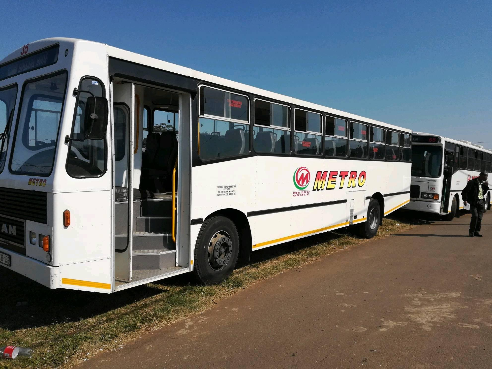
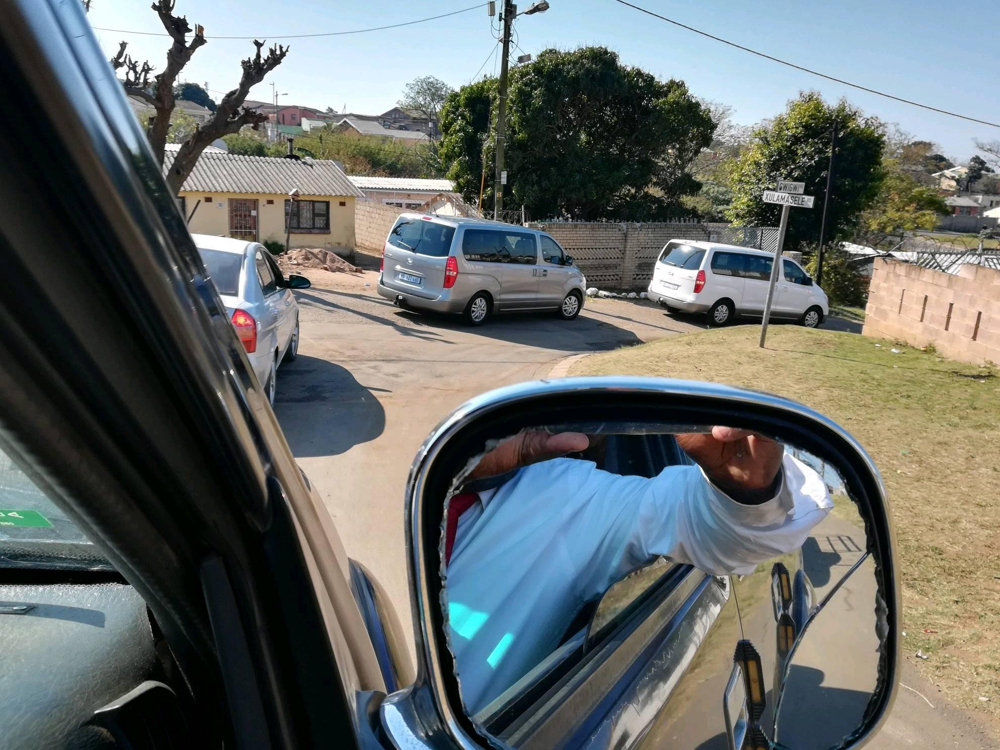
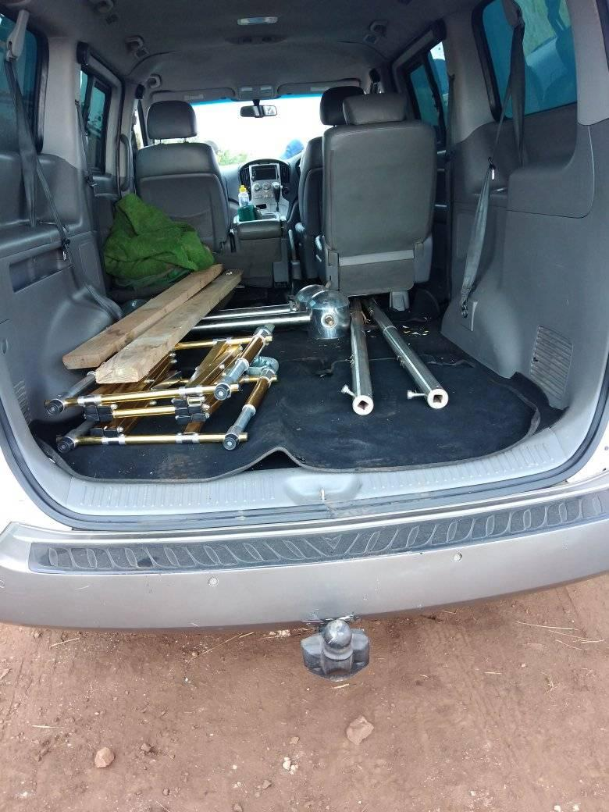
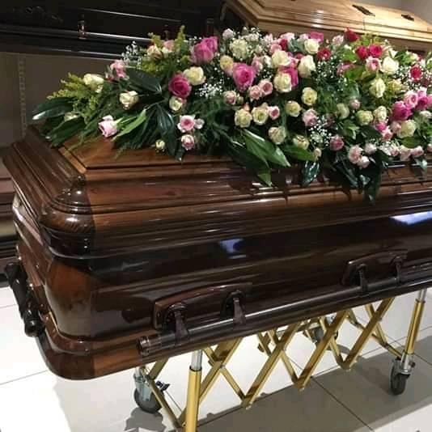
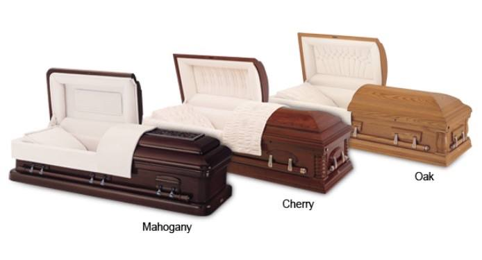
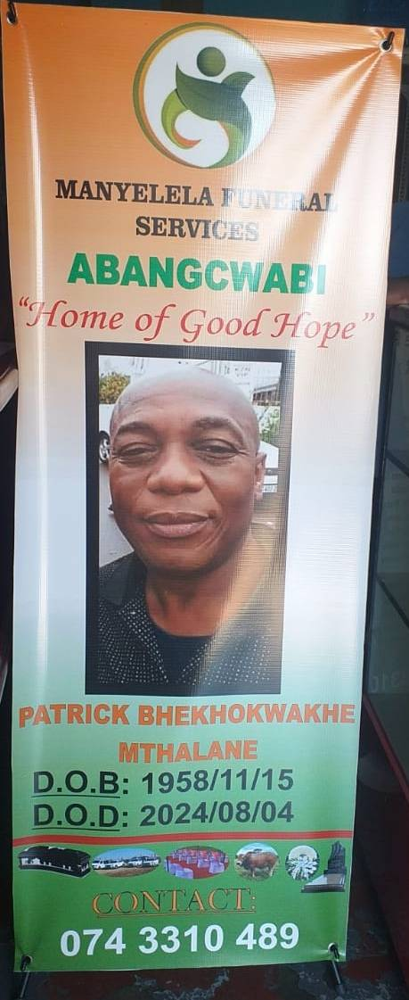
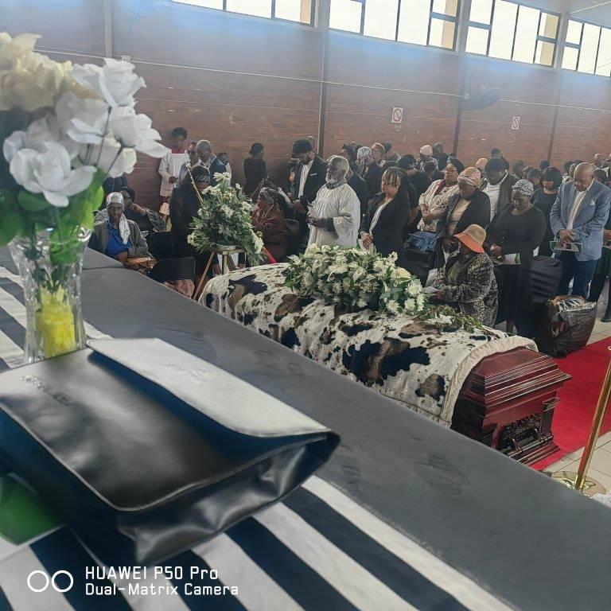
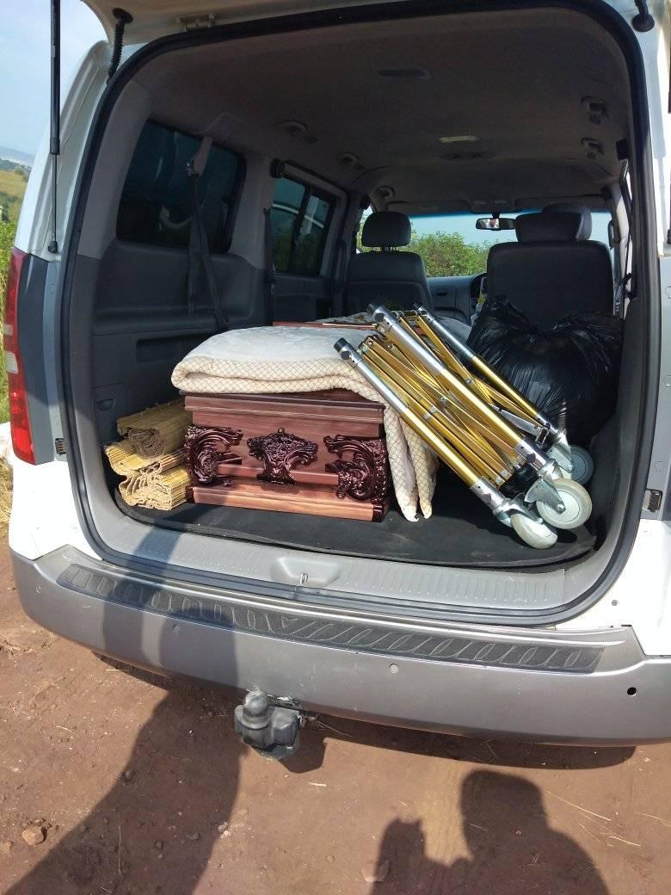
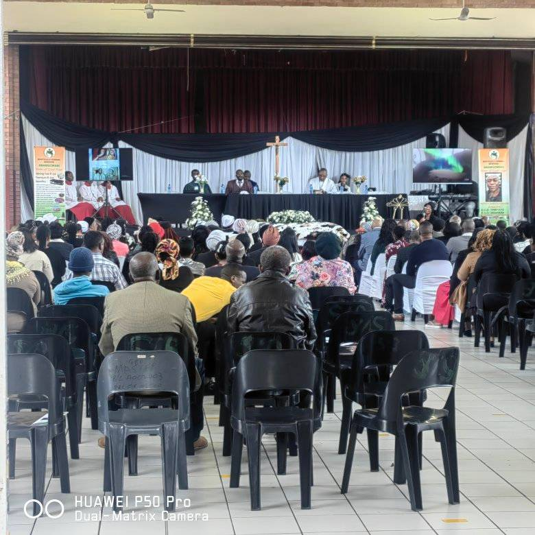
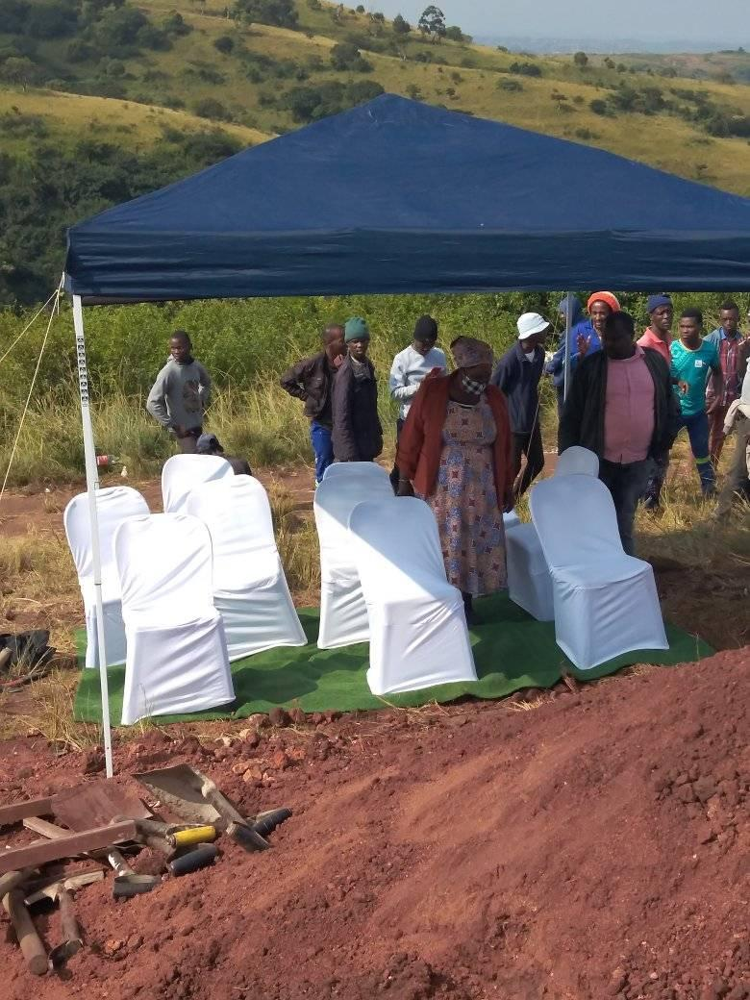

🚐 Funeral Transport Services
Dignified Journeys for Your Loved One
At Manyelela Funeral Services, we understand that every detail matters—especially the final journey. Our funeral transport services are designed to provide respectful, reliable, and elegant travel for your loved one and their family.
- Hearse Hire: Classic or modern vehicles to carry the casket with grace and dignity.
- Family Car Service: Comfortable vehicles for close family members to travel together.
- Extended Fleet Options: Additional cars or vans for guests and extended family.
- Graveside Transfers: Smooth coordination from service venue to burial site.
- Long-Distance Transport: Safe and professional arrangements for interprovincial or rural travel.
Why Choose Us:
- Courteous, uniformed drivers
- Clean, well-maintained vehicles
- Timely and discreet service
- Available 24/7 for emergencies
Let us carry your loved one with the care they deserve.



⚰️ Premium Casket Options
Crafted with Grace for a Beautiful Goodbye
At Manyelela Funeral Services, our premium casket selection is designed to honour your loved one with timeless beauty and exceptional quality. Each casket is carefully chosen to reflect dignity, comfort, and personal style.
🌟 Available Premium Casket Styles:
- Mahogany Elegance: Rich, polished mahogany wood, velvet interior lining, hand-carved detailing. Ideal for traditional and formal services.
- White Serenity: Pure white finish with silver accents, satin interior with lace trim. Symbolic of peace, purity, and grace.
- Royal Rosewood: Deep rosewood tone with high-gloss finish, plush interior, brass handles. A luxurious choice for a regal tribute.
- Modern Matte Ebony: Sleek black matte finish, minimalist design, soft-touch interior. Perfect for contemporary ceremonies.
- Cultural Heritage Casket: Custom carvings or symbols, traditional fabrics or beadwork lining. Honours cultural identity and ancestral pride.
💬 Customization Options OR what
- Interior fabric choices (velvet, satin, lace)
- Colour themes to match flowers or attire
- Personalized nameplate or engraved message
- Memory drawer for keepsakes or letters
Let your loved one rest in a vessel as beautiful as the life they lived.



🕊️ Final Farewell Service Description
A Graceful Goodbye for Patrick Bekokwake Mtalane
On 10/08/2024, family, friends, and loved ones gathered at Matikwe Hall to honour the life of Patrick Bekokwake Mtalane, who departed this world on [04/08/2024]. The atmosphere was filled with love, reflection, and reverence as we celebrated a life marked by kindness, strength, and unforgettable memories.
The service began with a heartfelt welcome and opening prayer, followed by tributes from family members and close friends. A moving slideshow of cherished moments reminded us of the joy Patrick Bekokwake Mtalane brought into our lives. The choir’s gentle hymns and the reading of scripture offered comfort and peace to all in attendance.
Following the ceremony, a dignified procession led to [**], where Patrick Bekokwake Mtalane was laid to rest. Floral tributes adorned the casket, and final words of blessing were shared as we said goodbye.
Though Patrick Bekokwake Mtalane is no longer with us in body, their spirit lives on in every heart they touched. May their soul rest in eternal peace.





